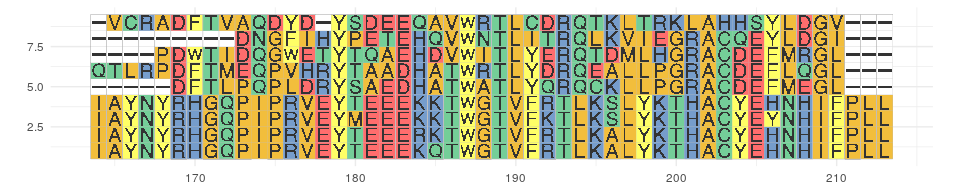
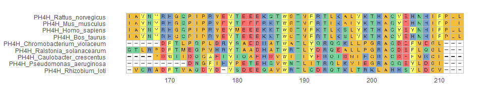

ggmsa supports visualizing multiple sequence alignment of nucleotide sequences and protein sequences using ggplot2. It supports a number of colour schemes, including Chemistry, Clustal, Shapely, Taylor and Zappo.
Quick Example
Plot multiple sequence alignment(colour scheme = ‘Chemistry’).
Protein Sequences
library(ggmsa) library(ggplot2) protein_sequences <- system.file("extdata", "sample.fasta", package = "ggmsa") ggmsa(protein_sequences, 164, 213, color = "Chemistry_AA")

DNA Sequences
nt_sequences <- system.file("extdata", "LeaderRepeat_All.fa", package = "ggmsa") ggmsa(nt_sequences,font = NULL, color = "Chemistry_NT")

RNA Sequences
miRNA_sequences <- system.file("extdata", "seedSample.fa", package = "ggmsa") ggmsa(miRNA_sequences, color = "Chemistry_NT")

Visualizing Multiple Sequence Alignment With ggtree.
library(Biostrings) x <- readAAStringSet(protein_sequences) d <- as.dist(stringDist(x, method = "hamming")/width(x)[1]) library(ape) tree <- bionj(d) library(ggtree) p <- ggtree(tree ) + geom_tiplab() data = tidy_msa(x, 164, 213) p + geom_facet(geom = geom_msa, data = data, panel = 'msa', font = NULL, color = "Chemistry_AA") + xlim_tree(1)

Learn more
For more details about the version in CRAN, please refer to the online vignette
Moreover, check out the guides for learning new features with the current development version: